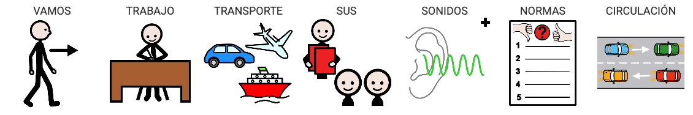

¿Sobre qué trata esta SdA?
SDA LOS MEDIOS DE TRANSPORTE de Paula
Imágenes de Canva y presentación de elaboración propia realizada con Canva.
Contenido DUA
La temática de esta situación de aprendizaje es la relacionada con los medios de transporte. Conocer cuáles son los medios de transporte más habituales, los medios por los que van, sus sonidos, normas de circulación como peatones, etc.
Lectura facilitada
Vamos a conocer:
- los medios de transporte.
- por dónde van.
- sus sonidos.
- las normas de circulación, etc.
Audio
Apoyo visual
